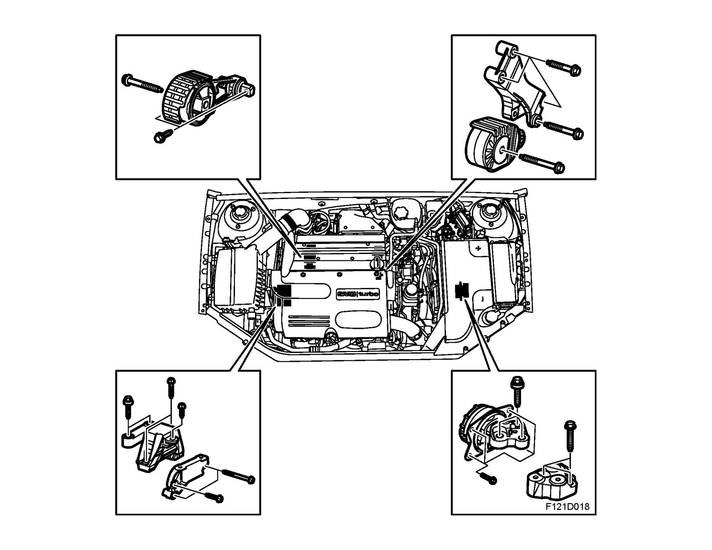

Engine Mount: Description and Operation
Engine mountings
Background
The power unit is suspended from two points; one on the left-hand side at the top of the gearbox and the body, and the other on the top right of the engine and the body.
The left-hand one is rubber, while the right-hand one is a combined rubber/hydraulic design. Using a hydraulic mounting on the right-hand side reduces the vibration that arises in the drive unit due to poor road surfaces. The vibration inherent in the engine is absorbed by the rubber part of the mounting, while the hydraulic part is active when the amplitude (vibration) in the drive unit is greater. Two torque arms complete the engine suspension. These arms, one fastened to the oil pan and helper frame, and the other to the mating surface between the engine and gearbox and the helper frame, absorb the torque that is exerted on the drive unit during acceleration and retardation.
Description
The hydraulic cushion comprises two chambers filled with a special glycol-based damping fluid. Between both these chambers is a diaphragm and a passage, where the length and cross-sectional area of the passage determines the damping characteristics of the cushion.
With bigger engine motion the damping capacity of the membrane is not sufficient, fluid is forced from the upper to the lower chamber and a pressure equalization occurs. The damping characteristics of the hydraulic mounts are in this way progressive, which means that the resistance from the mounts increases with increased loading.